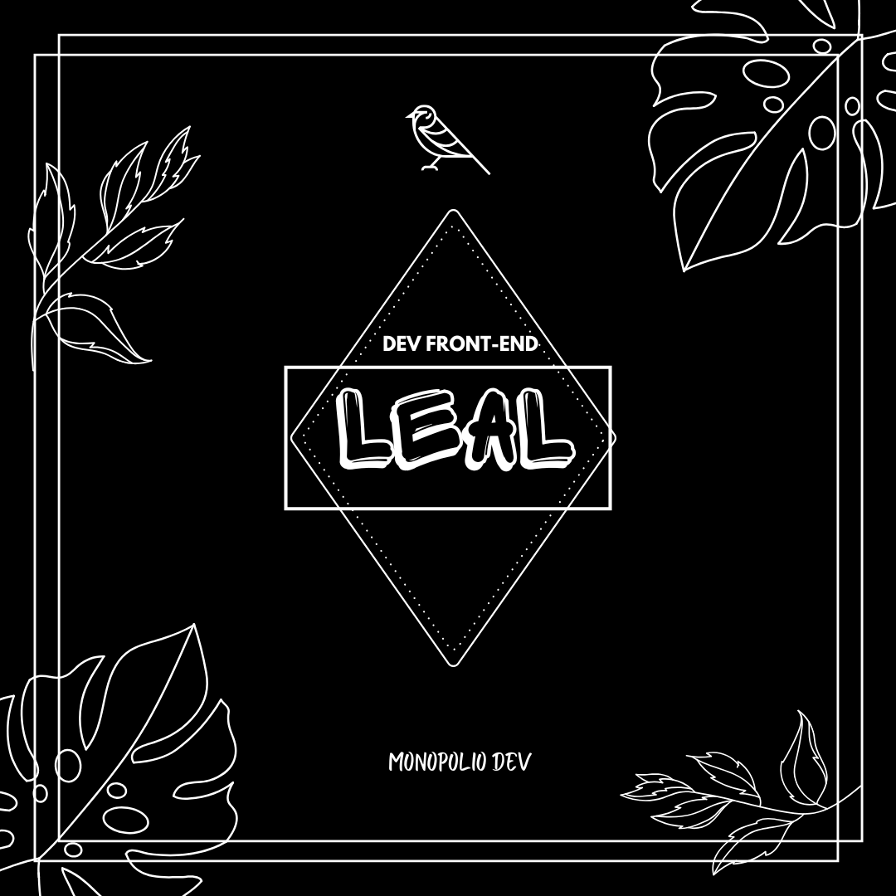

Elcinio Leal
Sobre Mim
Apaixonado por design e tecnogias, atuo como desenvolvedor front-end, transformando designs em
interfaces modernas, acessíveis e funcionais.
Desenvolvendo aplicações web responsivas utilizando HTML, CSS e JavaScript, com foco em performance,
organização de codigo e boas práticas.
Meu objectivo é criar experiências digitais que combinam
estética, usabilidade e eficiência, garantindo que cada projecto seja confiável, escalável e
otimizado.
Competências Técnicas
HTML
Tenho experiência em estruturar páginas web de forma organizada, clara e acessível, garantindo boa legibilidade e integração eficiente com estilos e interatividade.
CSS
Aplico o meu conhecimento de CSS para criar layouts responsivos e esteticamente consistentes, com atenção a design visual, responsividade e animações que melhoram a experiencia do usuário de forma funcional.
JAVASCRIPT
Possuo conhecimentos iniciais de JavaScript, capazes de adicionar interatividade simples e dinâmicas das paginas, manipulando comportamentos e respostas do usuario de forma funcional.
Projectos
